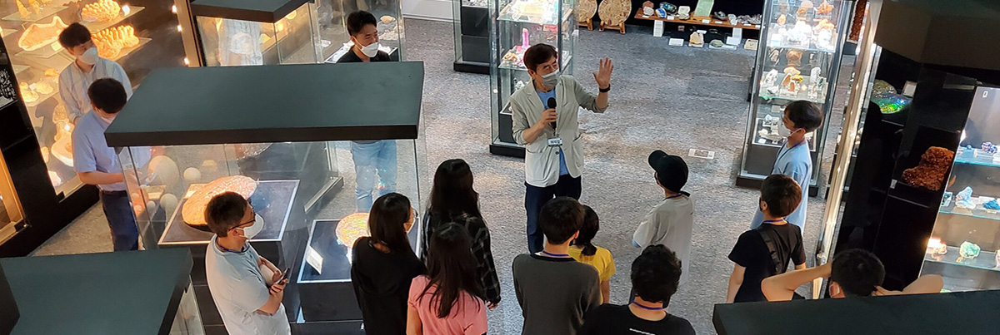

자연사 배움교실
SEODAMUN MUSEUM OF NATURAL HISTORY
초등학교 교과과정에 맞춰 학년별로 자연사와 관련된 이론설명, 영상교육, 전시물을 이용하여 학습하고, 재미있는 실습으로 학습의 내용을 좀 더 효과적으로 이해할 수 있도록 하는 교육프로그램입니다.
- 방학 중 (여름/겨울) 실시합니다.
- 각 강좌는 학년별 교과서와 실험관찰 교과과정에 맞춰 운영합니다.
- 전시장 전시물을 이용한 관찰학습을 병행합니다.
- 수강신청 시 수강학생의 학년에 맞는 강좌로 신청하셔야 합니다.
- 수강료 : 강좌당 16,000원(연간회원은 13,000원) / 수강생, 보호자 1인 입장료 포함
- 선불카드, 체크카드의 경우 카드 부분취소가 불가하오니 결제 시 유의바랍니다.
- 자연사 배움 교실 학기별 강좌 안내(박물관 일정에 따라 내용이 변동될 수 있습니다.)
- 아래 표는 참고용이며, 전체적으로 내용을 수정하고 있습니다. 보다 정확한 수업내용은 개설고시문을 참고해주세요.
| 겨울학기 (1~2월) |
봄학기 (4~5월) |
여름학기 (7~8월) |
가을학기 (10~11월) |
|
|---|---|---|---|---|
| 유치부 | - 코끼리 똥 - 상어가족 - 꿀잠, 겨울잠 |
- 우리 동네 꽃나무 - 상어가족 |
- 공룡과 놀아요 - 집 짓는 동물 |
- 가을열매 - 귀뚜라미 소리 |
| 1학년 | - 삼엽충 - 고래는 표유류 |
- 봄의 전령사 야생화 - 아름다운 나비 |
- 매미의 허물 |
- 가을의 메뚜기 - 식물이 킁킁킁 |
| 2학년 |
- 생태계란? - 극지방 이야기 |
- 새들이 사는 세상 - 버섯친구들 |
- 모기를 잡아라 - 개구리의 노래 |
- 환경에 맞추다 - 지구 탐험대 - 탈피 파충류 |
| 4학년 | - 식물의 분류 - 태양계와 행성 - 지층의 역사 |
- 미생물 - 산성비 - 석타과 석유 - 포자로 번식 |
- 별자리 찾기 - 기상캐스터 - 광물과 암석 - 화산폭발 |
- 앗, 뜨거워 온천! - 외계생명체를 찾아서 - 지진 - 바다의 |
| 5-6학년 |
- 세포관찰 - 나도 과학수사대 - 면역 - 생쥐해부 |
- 우주탐사 - 나도 과학수사대 - 생물킹덤 |
- 태양 흑점 - 유전자와 염색체 - 날씨가 왜이래? |
- 태양도 에너지예요 - 황금나선을 찾아라! - 나도 고생물학자 |